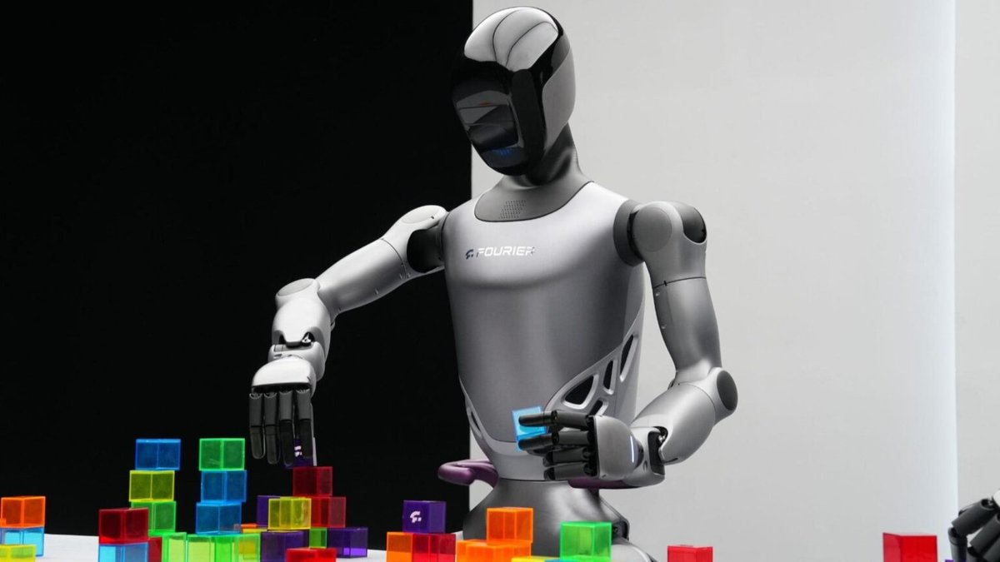

Highlanders · robot AI model
Kepler v1.0
Japan · 2026
Sources retrieved: 2 November 2026 (A, B, C, D)
- Model type
- World action modelSource and note: Model typeB robotstart.info/article/2026/09/03/382367.html · Retrieved 2 November 2026Note. Robot Start, 3 September 2026, reporting Highlanders' presentation at an AWS Japan results event, calls Kepler the company's own world action model (World Action Model, WAM) in its Japanese-language article.
- Inputs
- Camera TouchSource and note: InputsA highlanders.ai/kepler · Retrieved 2 November 2026Note. Highlanders' Kepler page lists “Inputs Vision · Force-torque · Tactile”.
- Parameters
- 10BSource and note: ParametersA highlanders.ai/kepler · Retrieved 2 November 2026Note. Target size for v1.0: “Kepler v1.0 targets a 10B-parameter world model trained on vision, force, tactile, teleoperation, simulation, and real-robot rollout data.”

Specifications
5/14 specifications disclosed 9 not stated
7 fields hidden 2 not-stated fields with a note stay ·
How to read the figuresShow guideClose
- not statedNo source
- 0Reported as zero
- ASource
Select a source marker for source details and notes.
Release1/1 disclosed
Released9 July 2026
Source and note: ReleasedD itmedia.co.jp/news/article/2607/09/1260709123/ · Retrieved 2 November 2026Note. [A] ITmedia News, 9 July 2026: Highlanders also announced Kepler v1.0 at that day's event on its agreement with Mitsubishi Motors (translated from the Japanese).
Input and output2/4 disclosed
Model typeWorld action model
Source and note: Model typeB robotstart.info/article/2026/09/03/382367.html · Retrieved 2 November 2026Note. Robot Start, 3 September 2026, reporting Highlanders' presentation at an AWS Japan results event, calls Kepler the company's own world action model (World Action Model, WAM) in its Japanese-language article.
InputsCamera Touch
Source and note: InputsA highlanders.ai/kepler · Retrieved 2 November 2026Note. Highlanders' Kepler page lists “Inputs Vision · Force-torque · Tactile”.
What it controlsNot stated
Source and note: What it controlsA highlanders.ai/kepler · Retrieved 2 November 2026Note. The page says the model “Predicts Action outcomes · Contact dynamics”, and the reflex layer is described as “Reflex layer. Balance, contact response, force control — faster than thought.”.
Degrees of freedom controlledNot stated
Size and speed2/2 disclosed
Parameters10B
Source and note: ParametersA highlanders.ai/kepler · Retrieved 2 November 2026Note. Target size for v1.0: “Kepler v1.0 targets a 10B-parameter world model trained on vision, force, tactile, teleoperation, simulation, and real-robot rollout data.”
Control rateapproximately 500Hz
Source and note: Control rateA highlanders.ai/kepler · Retrieved 2 November 2026Note. Reflex layer of the control stack, marked expected: “CEREBELLUM ~500 Hz (expected)”. The planning layer is “CEREBRUM ~5 Hz (expected)”.
Where it runs and what it is built on0/2 disclosed
On robot or cloudNot stated
Base modelNot stated
Openness0/3 disclosed
AccessNot stated
Licence documentNot stated
Licence typeNot stated
The developer’s own claims0/2 disclosed
Learns new tasksNot stated
Works across robotsNot stated
Source and note: Works across robotsC highlanders.ai · Retrieved 2 November 2026Note. Highlanders writes “Kepler is our foundational model for physical intelligence, in development across every body we ship.” and “One software stack, many bodies”; the Kepler page marks v1.0 as in development.Yes only if the developer itself says the model runs on different robot models, for example robots from two manufacturers or two of one manufacturer’s models. Several units of the same robot do not count.
Notes
Highlanders calls Kepler its foundational model for physical intelligence, in development across every body it ships.
Highlanders' Kepler page describes a planning layer at about 5 Hz and a reflex layer at about 500 Hz, both marked as expected.
ITmedia reported that Highlanders announced Kepler v1.0 at its 9 July 2026 event with Mitsubishi Motors (translated from the Japanese).
Sources
One line per source, not per figure: a source has one retrieval date.
- Ahighlanders.ai/keplerMain source. Retrieved 2 November 2026
- Brobotstart.info/article/2026/09/03/382367.htmlSecondary. Retrieved 2 November 2026
- Chighlanders.aiRetrieved 2 November 2026
- Ditmedia.co.jp/news/article/2607/09/1260709123/Secondary. Retrieved 2 November 2026